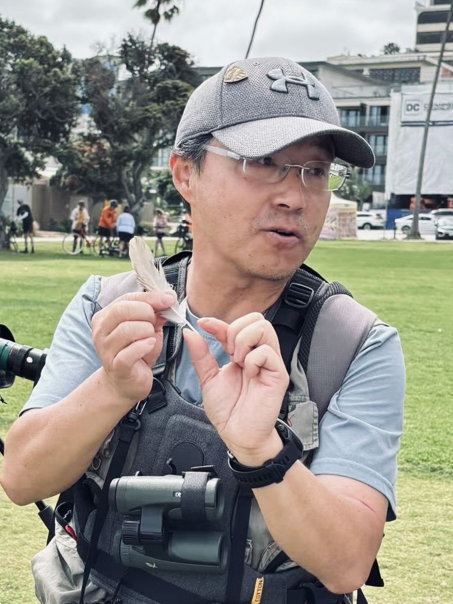

Design
Chinese Style Animal Pattern Design: Reed Parrotbill
Wildlife pattern design inspired by Chinese visual traditions.
 LEO XIANG | Wildlife Art & Nature Education
LEO XIANG | Wildlife Art & Nature Education
Wildlife Artist • Nature Educator • Community Birdwatching Leader based in San Diego
Through wildlife art, birdwatching, and nature education, I help families connect with nature and develop a lifelong curiosity about the natural world.



Meet Leo Xiang
Wildlife Artist • Nature Educator • Community Birdwatching Leader
Leo Xiang is a San Diego-based wildlife artist, scientific illustrator, and community birdwatching organizer.
Through wildlife art, birdwatching, and nature education, he helps children and families develop observation skills, curiosity, and a deeper connection with the natural world.
His work combines art, science, and outdoor exploration to inspire the next generation of nature lovers.
San Diego Wildlife Artist
Wildlife pattern design inspired by Chinese visual traditions.

Decorative animal pattern design for art products and visual applications.

Pattern design focused on endangered birds and habitat awareness.

A wildlife painting about movement, energy, and survival.
A painting dedicated to wetland birds and their fragile habitats.
A quiet ecological scene shaped by light, water, and wildlife.

A photographic moment centered on presence and character.

A coastal image about balance, place, and natural light.
A captured instant with directness, timing, and attention.
Family Birdwatching San Diego
Leo organizes family-friendly birdwatching activities in San Diego to help children and parents discover local birds, observe nature, and build curiosity about the natural world.
Learn More

Scientific Illustration • Nature Journaling for Kids
Classes combine drawing, observation, birdwatching, storytelling, and natural science to help children learn how to see, record, and understand nature.
Explore ClassesAbout
Leo Xiang is a San Diego wildlife artist, nature educator, scientific illustration teacher, and community birdwatching organizer. His long-term mission is to connect people with nature through wildlife art, careful observation, family birdwatching, and nature education for children and families.
Read About LeoContact